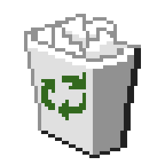
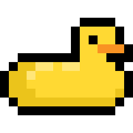

Recycle Bin
About Me
LinkedIn
Resume
File
Edit
View
Help

Mauricio Rivera
Software Developer & Builder of Things
Welcome to my personal page! I'm a developer who loves building things for the web. I have experience in frontend and backend development, and I'm passionate about clean code, good design, and solving interesting problems.
When I'm not coding, you can find me exploring new technologies, contributing to open source, or enjoying the outdoors.
Ready
Shut Down Windows
Are you sure you want to shut down your computer?